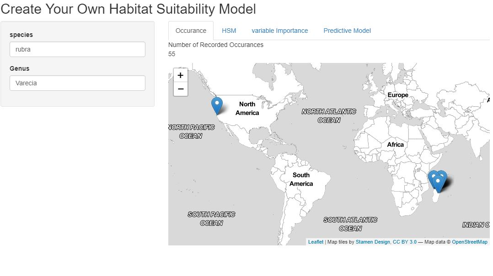
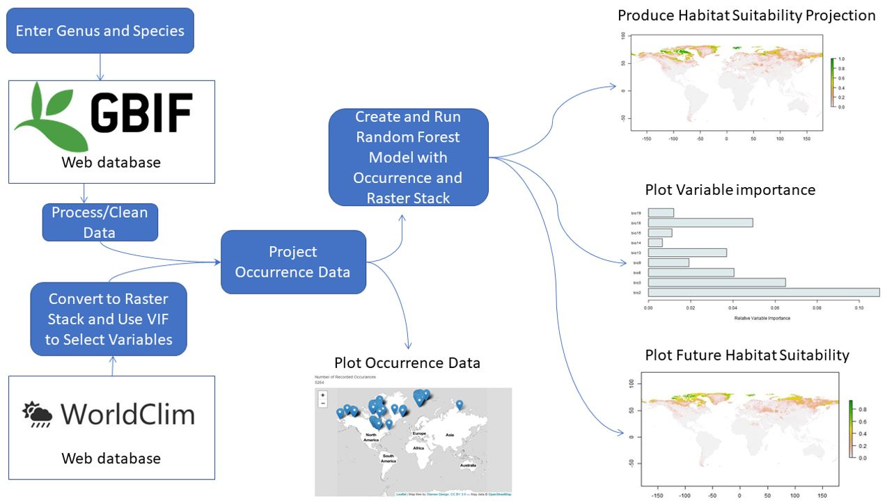

App That Uses Machine Learning to Predict Suitable Habitats
This is an App that automatically creates A habitat suitability model HSMs for any plant or animal in the world through machine learning. you can view the code here .
HSM are models that attempt to determine the region or habitat that a species either does reside within or could reside within. The issues with these are that they typically take days to make a single model, as you need to pull data from multiple sources layer them correctly and apply weights to them. This is made worse by the fact that most models are produced using mapping softwares like ArcGIS and QGIS. These are great for high computational spatial problems and creating beautiful and informative visuals. The downside is of course the time expenditure requires to produce even a single one. As well as the fact that you need to be an expert in both HSMs and ArcGIS to create one. Making it not readily avalible for the public. I tried to develop a solution to these problems.
I created an App that automatically and near instantly creates a HSM for any species on the planet. Not only is this a highly useful tool for conservation groups and NGOs it also has the added benefit of ease of use. There's no need for a GIS expert to develop a map for you, as all you need to do is type in the species you want and you'll get a global output that can be zoomed for your desired region.

The interface is designed to be simple and intuitive. As can be seen above, once the user enters their species of choice a quick occurence output is displayed so the user can get an idea of the the dataset that they'd be working with. Then they can choose to run the model, view variable importance and even run models that predict habitat suitability in 25 or 50 year in time.
How it works

Honestly the road map above probably explains it better than I could, but I'll try and elaborate! The key to the app lies in the data. When a user enters a genus and species the app web scraps occurence point data from the worlds largest species occurence databse (GBIF). It simultaneously takes climatic data from the worldclim database. It then merges and overlays the 19 worldclim layers and the occurence data set. The new dataframe is then cleaned and molded into a shape that is can be run through a ML model. Data cleaning included various steps, like factor reduction, managing NA's, and testing multicollinearity.
A Random Forest model was chosen as a good fit for the data app as it usually sutible for multifactor geographic models. It's also a good trade off between accuracy and run time. It has the added benefit of assigning variable importance to the models factors. This way app users can see the impact that individual variables (like annual rain fall for example) can have on their species distribution. The output of the model is shown as world maps, as can be seen above. These display probabilities, ie. the liklihood that a species could survive in that region.
Some limitations and Issues
1. The data itself. The occurence data comes from data entered by citizen scientist. This means the actual occurences could be flawed or potentially way underepresented. The predictor variables are all climatic. This means many key variables were exclude, like the importance of elevation.
2. I had to limit the input occuences otherwise the runtime was far too long. This meant i randomly selected occurences to a maximum of 5,000 points, where for some species there were over 200,000 occurences.

Stuart Ross
A Data Science Intern at Leeds Institute of Data Analytics. This was completed in my spare time as an independent learning oppertunity... and honestly just for a bit of fun too.